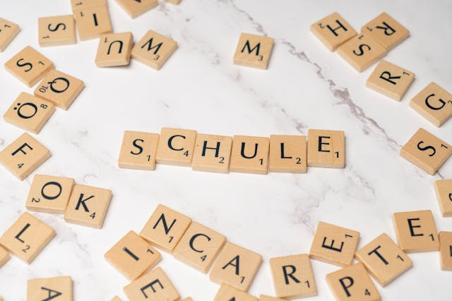

In the ever-evolving settings of education, one of the most exciting developments is the integration of educational games into the learning process. Educational games are designed not just to entertain but to educate, offering children the opportunity to learn while they play. These games combine the engaging elements of traditional play with educational content, helping children develop critical skills in an enjoyable way. Whether it's through solving puzzles, building virtual worlds, or engaging in strategic thinking, educational games have the potential to transform the learning experience for children.
The Role of Educational Games in Learning
The Role of Educational Games in Learning The appeal of educational games lies in their ability to make learning an engaging and interactive experience. Children are naturally inclined towards play, and educational games leverage this by embedding learning objectives within fun activities. This approach can make complex concepts more accessible, as children are more likely to engage with material that is presented in a playful and interactive format.
Educational games play a pivotal role in a child’s development. They provide a hands-on approach to learning, which can be more effective than passive forms of education like listening to lectures or reading textbooks. When children engage in educational games, they are not just absorbing information; they are applying it, testing it, and understanding it on a deeper level. This active involvement enhances memory retention and comprehension, leading to better academic outcomes.
In addition, educational games can cater to different learning styles. Some children learn best through visual means, others through auditory, and some through kinesthetic experiences. Educational games often combine these elements, making learning more accessible to a broader range of students. This inclusivity is particularly beneficial in a classroom setting where children’s abilities and learning preferences can vary widely.
Beyond making learning fun, educational games serve a critical role in the cognitive, social, and emotional development of children. They offer a unique platform where children can practice problem-solving, enhance their creativity, and develop critical thinking skills. Moreover, educational games can foster a sense of achievement and confidence as children progress through levels or solve challenges, reinforcing positive learning behaviors. While educational games have the potential to enhance learning, it is crucial to choose games that are well-designed, age-appropriate, and aligned with learning objectives.
Some Educational Games that Make Learning Fun
To truly appreciate the value of educational games, it's essential to explore some of the most popular and effective games available. Each of these games offers a unique approach to learning, helping children develop different skills in an engaging way.
• BrainPOP
BrainPOP is a website that offers animated educational videos on a wide range of topics, from science and history to English and social studies. Each video is accompanied by quizzes and activities that reinforce the content presented. It is an educational tool that can be used to introduce new concepts or reinforce classroom learning. The animated videos are designed to be engaging and informative, making difficult subjects more accessible to children.
• Charades
Charades is a classic game that promotes creativity, teamwork, and communication skills. In this game, children act out words or phrases without speaking, while others guess what they are portraying. Charades can be used to reinforce vocabulary, teach about emotions, and develop public speaking skills. It’s a fun way for children to express themselves and engage with others in a non-competitive setting.
• Chess
Chess is a classic board game that requires two players to strategically move their pieces on a board with the goal of checkmating the opponent’s king. Each type of piece moves in a specific way, and players must think several moves ahead to outmaneuver their opponent. The game requires players to anticipate their opponent’s moves, plan their own strategy, and adapt to changing situations on the board. This level of strategic thinking can enhance a child’s ability to analyze situations and make decisions, skills that are valuable both in academics and in life. Chess also teaches the importance of patience and persistence, as success in the game often comes from careful planning and thoughtful execution.
• Math Blaster
Math Blaster is an online game where children solve math problems to advance through levels and complete missions. The game covers basic arithmetic operations such as addition, subtraction, multiplication, and division, presenting them in the context of space adventures. The educational game turns math practice into an exciting adventure, making it an ideal tool for children who might find traditional math exercises tedious.
• Minecraft
Minecraft is a sandbox video game that allows players to build and explore virtual worlds made up of blocks. The game promotes creativity and imagination as children can construct anything from simple houses to complex cities. Additionally, minecraft can be used to teach concepts in subjects like math, engineering, and even history, as players recreate historical landmarks or explore mathematical concepts like symmetry and geometry in their builds.
• National Geographic Kids
The game offers a range of games, activities, and videos that explore different aspects of the natural world, from wildlife and ecosystems to geography and space. The website also features interactive quizzes and puzzles that challenge children to apply what they've learned. It is an excellent resource for fostering a child’s curiosity about the world around them. The games and activities are designed to be both fun and educational, encouraging children to learn about science, nature, and geography in an interactive way
• Osmo — Numbers
Osmo is an interactive learning tool that combines physical and digital play. In “Osmo — Numbers,” children use physical tiles to solve math problems that are reflected on the screen. The game encourages children to experiment with numbers and develop their arithmetic skills in a hands-on, playful way. Osmo’s unique approach to learning makes it a powerful tool for teaching math concepts in a fun and interactive manner.
• Puzzles
Puzzles are a simple yet effective educational tool that enhances cognitive development. They challenge children to think critically, recognize patterns, and solve problems. Puzzles also improve memory and concentration, as children must remember shapes, colors, and patterns to complete the picture. Additionally, working on puzzles can boost a child’s confidence as they experience the satisfaction of completing a challenging task.
• Rubik's Cube
The Rubik's Cube is a 3D puzzle that challenges children to align colors on each side of the cube. Solving the Rubik’s Cube requires logical thinking, patience, and problem-solving skills. It teaches children to break down complex problems into smaller, more manageable steps. Additionally, working on the Rubik’s Cube can improve spatial awareness and hand-eye coordination.
• Science Kits
Science kits provide hands-on learning experiences that introduce children to scientific concepts and principles. These kits often include experiments and activities related to chemistry, physics, biology, and earth sciences. Science kits are an excellent way to make abstract concepts more concrete and engaging
\• Scrabble, The Classic Word Game
Scrabble is a classic board game that challenges players to form words on a game board using letter tiles with varying point values. The goal is to score the highest points by creating words that connect with existing ones on the board. Scrabble is particularly effective in enhancing a child’s vocabulary and spelling skills by encouraging children to think of words and strategically place them on the board for maximum points. Additionally, the game introduces children to new words and meanings, expanding their vocabulary in a fun and competitive environment.
• Spelling Bee
The Spelling Bee is a classroom activity that enhances spelling and vocabulary skills. In this competition, students are given words to spell aloud, with each round becoming progressively more challenging. Participating in a Spelling Bee encourages learners to expand their vocabulary, improve their spelling, and gain confidence in their language abilities.
• Word or Typing Games
Word and typing games are great for improving literacy skills. These games challenge children to form words, recognize spelling patterns, and increase their typing speed and accuracy. By playing these games, children can expand their vocabulary, improve their spelling, and develop faster typing skills, which are essential in today’s digital age. Games like “TypingClub” or “WordScapes” are excellent examples that combine fun with learning.
While educational games offer numerous benefits, it is important to balance screen time with other activities such as physical play, social interaction, and reading. Excessive screen time can lead to negative effects on a child’s physical and mental health.
Educational games can be a powerful tool for enhancing a child’s learning experience. When chosen wisely and used in moderation, these games can help children develop a wide range of skills, from critical thinking and problem-solving to creativity and language development. By making learning fun and engaging, educational games can inspire a lifelong love of learning and set children on a path to success.